The Castle at Fort Totten
The Castle at Fort Totten
by Alison McKay and Liang Gao with Bayside Historical Society
Unless otherwise noted, all photos are reproduced from the Bayside Historical Society (BHS) archival collections and institutional records with the majority of photographs taken by Freya Hart Liggett, Laszlo Salamon, and Susan Chesloff.
Licensed under a CC BY 4.0
© 2015
, circa 1880 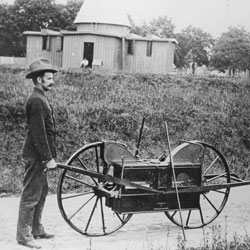Engineer's linear measuring device, 1880 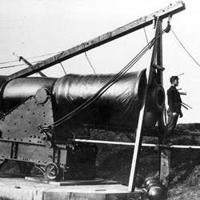Experiment with magnesium and a Rodman gun wrapped with wire coil, 1879 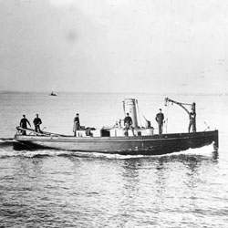Launch used in laying
and maintaining the torpedo field in Little Neck Bay 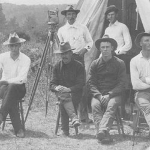Group of Engineers relaxing at the fort, 1894 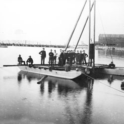Pontoon with hand-driven pile driver, 1880 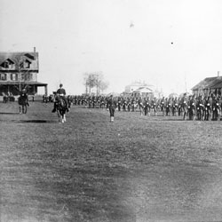Parade Grounds
, Willets Point, 1890 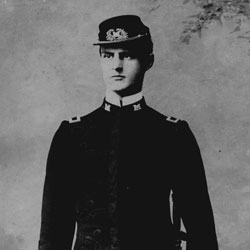Charles Kutz
, Engineer Graduate Student, Willets Point, 1894 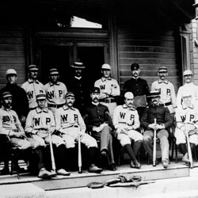Willets Point Engineers baseball team on the steps of the Officers' Club, 1890 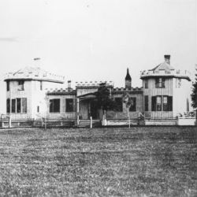The Casino
built in the Neo-Gothic style, the Casino was a two-story wood frame building that was constructed some time between 1866 and 1871. Willet's Point.
While most of the original wooden Civil War era buildings and barracks were already constructed by the time the engineers arrived at Willet's Point, several new buildings were added. these included a photography laboratory, munitions storage, a brick fireproof torpedo storehouse, and a mess hall known as the Casino.....
named The Officers' Club was built using balloon-frame construction.
It was more than a decade after the U.S. Army Corps of Engineers School of Application was established at the fort that the Officers' Club was built in 1887. Funds for the construction of a new Officers' Club were requested in 1885 by LTC Henry Abbot, Commander of the Engineer Battalion at Willet's Point. the new building was meant to replace the much smaller Casino mess hall. Abbot's total request for the operation of the post that year came to $19,000. Of this, the largest budgeted item was $12,000 for the construction of the Offices' Club.
Architectural plans for the three-story wood frame building were drawn by the Office of the Quartermaster General in the Castellated Gothic Revival style. The Castle features octagonal pavilions that flank a central pavilion and the building was originally painted a grayish white to simulate stone.
That the architectural design of the building pays direct tribute to the Engineers' castle insignia is a reflection of their intended permanency on the fort. However, the Army Engineers only used the Officers' Club for fifteen years. The Corps of Engineers and School of Application left Fort Totten in 1902, and moved their personnel and materials to the Washington Barracks (now Fort McNair) in the District of Columbia.
 Brides
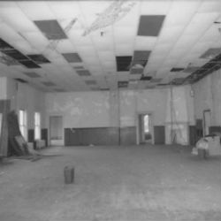Ballroom Before
Brides
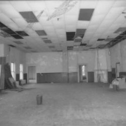Ballroom Before
Bayside Historical Society uses the room for large events, including its annual contemporary art show, after the renovation was complete, the ballroom once again functions as a grand space to host large affairs.
For a number of years, while the Engineers School of Application was based at Fort Totten, the second floor Reception Room was used as a library.
Wedding receptions at the Officers’ Club had been a long-standing tradition when the building was used by the military, and Bayside Historical Society continues that tradition day.
: the most striking features of the building 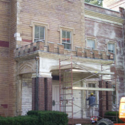Exterior - Center Reno 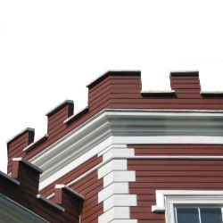The Exterior Restoration
One of the most striking features of the building is the crenellation topping the Castle. For almost a century, metal flashing on the parapets between the central gate house and the two octagons of the facade covered the crenellation. When the flashing was removed the crenellation was revealed, and the building was finally restored to its original splendor.